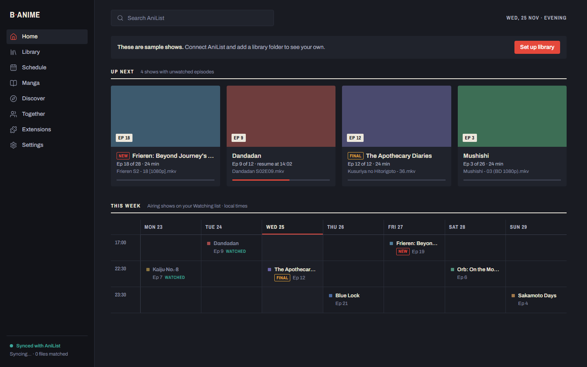
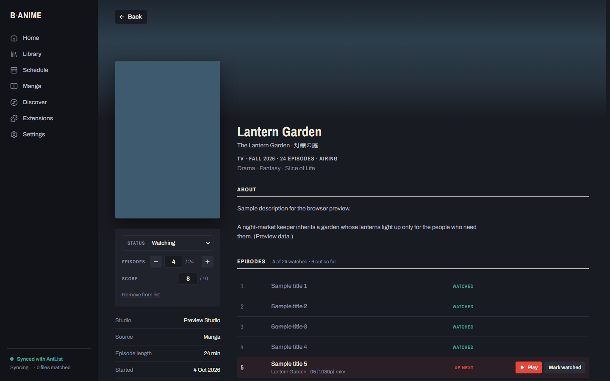
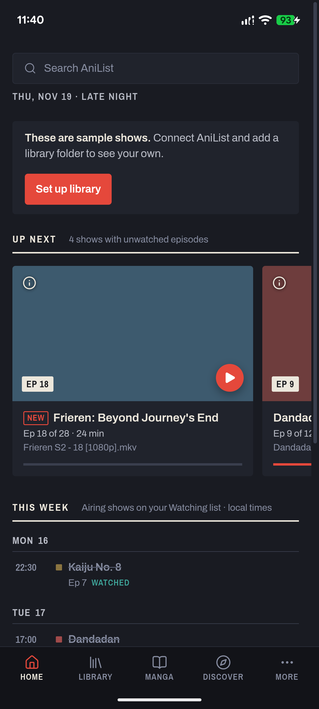

NEW Watch together with friends
Pick a show. It plays. AniList keeps up.
B-Anime finds the anime and manga on your PC, matches them to AniList without you renaming a thing, plays the next episode in one click and records your progress. It shows what's up next and what airs this week, like an evening's TV listings.

What's on
Your collection does the work; the app stays out of the way.
Finds your episodes
Point it at your folders. Files are matched to AniList whatever they're called: release-group names, S01E05, season folders, absolute numbering. New files appear as they arrive, and nothing is moved or renamed.
Progress syncs itself
Finish an episode and AniList knows. Your lists, progress and the airing schedule sync on their own, with the time it last synced always on screen.
One click to the next episode
Home shows the next unwatched episode of every show you're watching, where you left off, and this week's releases in local time.
Plays in the app, or in yours
A built-in player with subtitles, intro and outro skipping, resume and the next episode lined up. Prefer MPV or VLC? It plays there too, and MPV still tracks your progress.
Online sources and manga
Add streaming and manga sources from extension repositories, then read chapters in the built-in reader, single page, double page or strip.
Small, fast, quiet
Written in Rust: a 7 MB installer, instant start and smooth scrolling through thousands of shows. No ads, and no analytics.
Watch with friends
Send an invite link and watch an episode in step, each from your own library or source. Everyone loads before it starts, pauses and jumps reach the whole room, and it carries on if the host leaves.
Every show, one page
Episodes, your list and the source, together
- Watched is stamped, not hidden. Every episode shows its state, with the next one marked.
- Edit your list in place. Status, episodes and score save straight to AniList.
- Local first, online when it's not on disk. Pick a source and the episodes play from there.

On your phone
BETA
The same app, laid out for one hand
B-Anime for Android has the same look and the same engine. Home, Library, Manga and Discover sit in a bottom bar; Up next swipes sideways; this week reads as a list of days.
- Android 7.0 or later on 64-bit ARM phones (nearly every phone since 2017).
- Updates itself. It downloads new versions, checks them, and asks Android to install.
- Early days. Staying signed in to AniList and local folders are still coming to Android.

Questions
Didn't find yours? Open an issue on GitHub.
Is B-Anime free?
Yes, with every feature, no ads and no paid version. If you'd like to support it, there's Patreon.
Do I need an AniList account?
To sync your lists and progress, yes: sign in once from Settings (it opens AniList in your browser). Without one, B-Anime still plays your files.
Does it download anime?
No. B-Anime plays the files you already have, and online sources you add yourself through extensions. It has no torrent client or downloader, and it doesn't host any media.
Windows says "Windows protected your PC"
Click More info, then Run anyway. The installer isn't code-signed yet, so Windows doesn't know the publisher. It's built from the public source by the project's release workflow; you can check it against SHA256SUMS.txt on the release page.
How do I install the Android app?
Download the APK on your phone and open it. Android asks once to allow installs from your browser; allow it, then tap Install. After that, B-Anime finds new versions itself and asks Android to update.
How do I install it on a Mac?
With Homebrew, in Terminal:
brew install --cask ahmedanjum30/tap/b-anime
Or download the app, unzip it and drag B-Anime to Applications. It isn't signed with an Apple developer ID yet, so the first time macOS won't open it: right-click it and choose Open, or allow it in System Settings → Privacy & Security. Homebrew takes care of that for you. B-Anime for Mac needs a Mac with Apple Silicon (M1 or later) and updates itself.
Does it send my data anywhere?
Only where it has to: AniList (your lists and progress, when you sign in), GitHub (to check for updates) and the extension sources you install. There are no ads, analytics or tracking.
Tonight's listings start here.
Install B-Anime, point it at your folders and sign in to AniList.